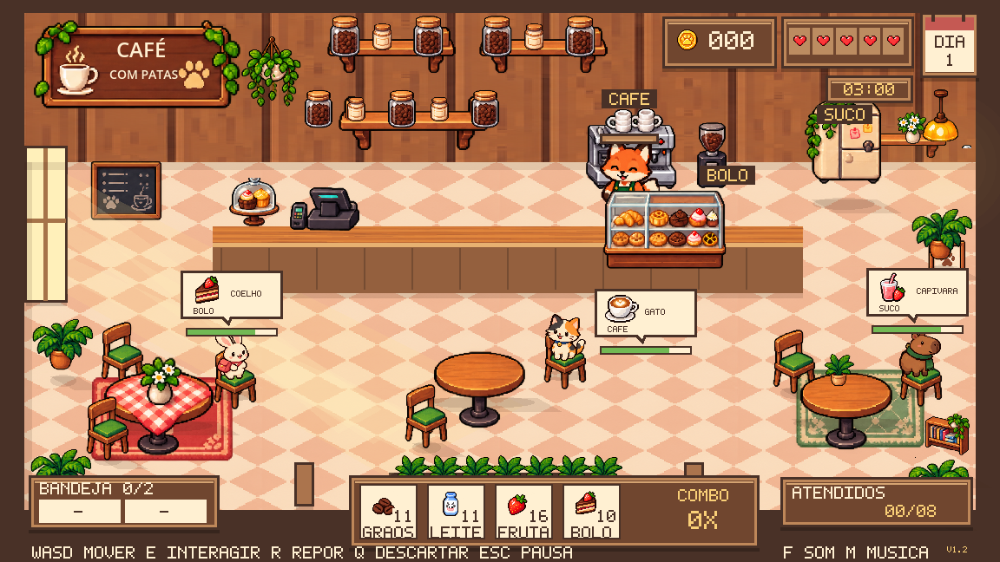
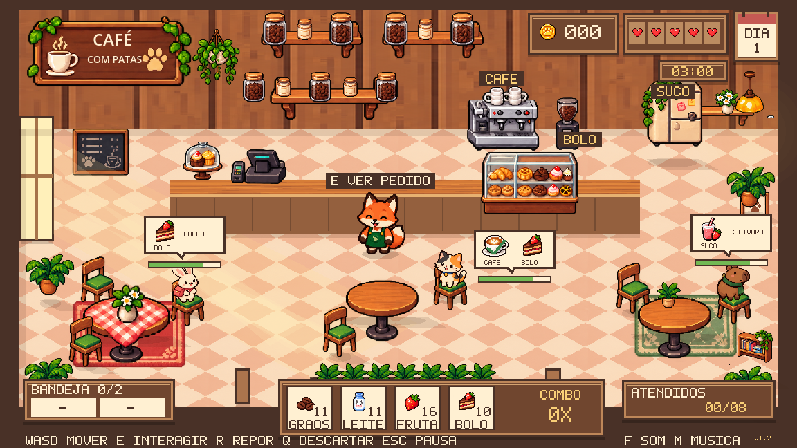
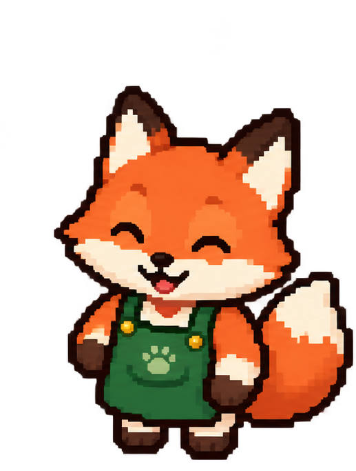
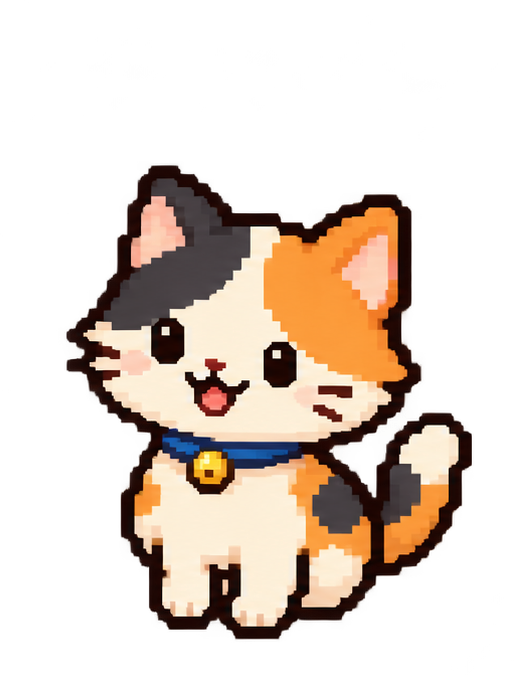
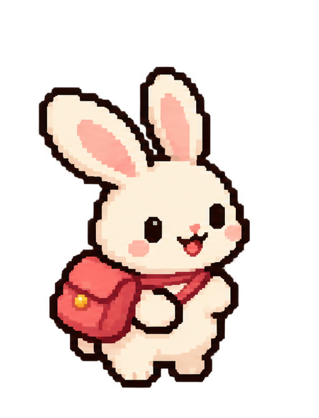
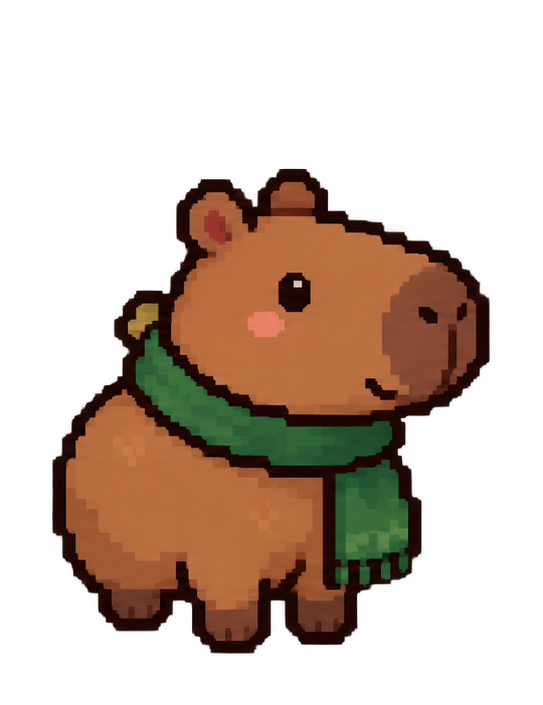

Cada receita, um lugar
Prepare café na cafeteira, pegue bolo na vitrine e faça suco na geladeira. Aproxime-se e pressione E.
Vista o avental da raposa barista e transforme uma pequena cafeteria no lugar favorito da vizinhança.

Observe o pedido de cada mesa, escolha os produtos certos e cuide do tempo. Um atendimento completo rende moedas e mantém a reputação da cafeteria.

Prepare café na cafeteira, pegue bolo na vitrine e faça suco na geladeira. Aproxime-se e pressione E.

Prepare dois produtos em sequência e leve ambos na bandeja. A entrega usa os itens que combinam com o pedido da mesa.

A tecla E funciona em volta da mesa. Pedidos duplos recebem tempo adicional e aceitam entregas parciais.

A raposa é a personagem que você controla. Organize os preparos e escolha a melhor rota.

O mais apressado da turma: 44 segundos para um pedido simples.

Um intervalo para um lanche: 52 segundos para um pedido simples.

Prefere aproveitar o momento: 64 segundos para um pedido simples.
Pedidos com dois produtos recebem mais 24 segundos. A paciência começa quando o cliente chega à mesa.
Priorize barras curtas, combine pedidos na bandeja e acompanhe os ingredientes. Reponha o estoque entre os atendimentos.
Aprender a jogar →WASD ou setas — caminhar
E — preparar e servir
R — repor estoque com a bandeja vazia
Esc — pausar para respirar
Desenvolvido no curso técnico de Programação de Jogos Digitais, 2º ano. O projeto explora lógica de programação, animação, colisões, interface e equilíbrio de jogo em uma cafeteria acolhedora.